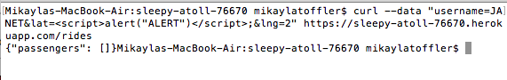
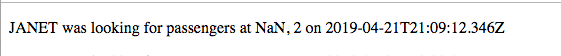
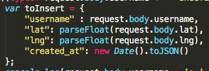
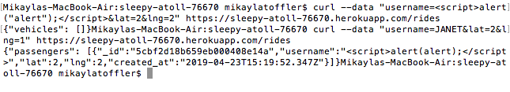
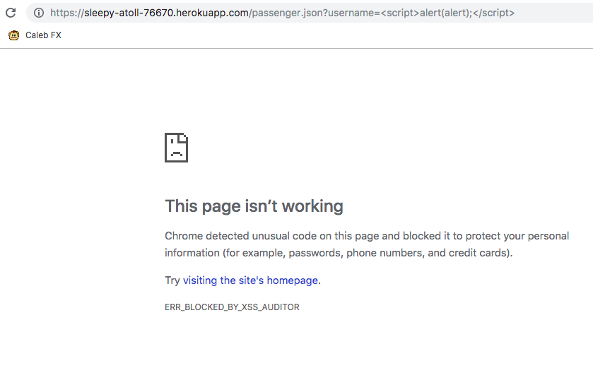
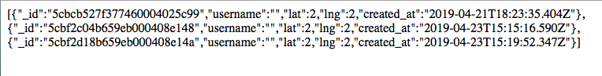

Introduction: Assignments 2&3 included a server and a web app. The server
gathers information on clients, such as whether they are a vehicle or a
passenger, their username, their geolocation, and the time at which the info
is sent. The web app is a map that requests data from the server to locate nearby
passengers or vehicles. The purpose of this Assignment4 was to test for
vulnerabilities in Assignments 2&3 - i.e, mechanisms by which a user can either
alter the pre-existing program or retrieve more data than the server intends
to share.
Methodology: I didn't use any external tools such as Burpsuite or ZAP. I
used "curl" to send data to the server. My first few rounds of black-box
testing were fruitless, and my partner had actually warned me that some of
the example tests we'd seen in class wouldn't work on his program. For this
reason, I quickly downloaded and inspected his code in order to follow
his process more closely and find sites of vulernability.
Findings:
I found that certain mechanisms that my partner used for validating data,
which weren't necessarily intended for security purposes, actually functioned
to provide security. His program is pretty strict on checking user data, and
this practice augmented the security. I will address two failed attacks, one
injection and one cross-site scripting attack, and why they failed due to his
particular implementation. An injection attack is when a hacker tries to tamper
with or get access
to the information stored in the database. I was, however, able to
perform a a cross-site scripting (XSS) attack when entering passenger data.
But Chrome and Safari settings (I do not have firefox) did not permit
full viewing of the attacks (nonetheless, I have evidence!).
XSS attacks are when a user sends data to the server that actually goes in
and appends new / alters pre-existing code in the program, resulting in
unintended behavior.
Issues Found:
-
The issue: Database injection
Location: /rides POST route. Viewed in terminal via curl.
Severity: Negative. His program protects against this attack.
Description: When sending data to the server, I tried to access all the
vehicle data in the database using the [$ne] operator in the username
key, leaving the value field blank. This was
intended to have the program send back all the vehicles whose username
is not equal to...the empty field. So, that would catch all the
vehicles, since none of them have an empty username! While this attack
works on my own program, it does not work on my partner's. This is due
to the flow of his implementation: he calls find() to gather all documents
from the collection, and then manually does a check to see if they don't
match the specified criteria, subsequently removing them.

-
The issue: Cross-site scripting
Location: data sent via /rides POST route, and viewed in server homepage on browser.
Severity: Negative. His program protects against this attack
Description: I attempted to perform cross-site scripting through the
lat or lng field when entering vehicle data. The data should implement
a script that makes an alert window pop up when the user goes to the home
page, because this page prints-to-screen vehicle information, including
the lat/lng. The intention was to get the program to run the script that
I had entered in this field. Here was what I sent:

But here is what the web page displays:

This can be attributed to the part of my partner's program where he uses
the parsefloat() function on the data entered in the lat and lng fields.
This mechanism was initially used for the intention of turning the lat & lng
fields from strings into floating point numbers, but it also ended up having
the added effect of turning any data - including my malicious script data -
into a floating point number - in this case, the data was incoherent to a
parsefloat function, so it became "NaN." My partner did a good job of
pre-meditating that a user may not just enter numbers, but also, the parsefloat()
function was necessary for the lat and lng variables to be treated not
as strings for other parts of his program.

-
The issue: Allowing for garbage data to be printed on the app
Security: Perhaps not a concern for security, but certainly a concern for
how efficient and useful the app is.
Description: The above (Issue #2) concern shows that while XSS was not an issue
when sent via the lat and lng fields, but still it seems less than useful to
print such data to the app at all. If a vehicle's lat and lng coordinates
cannot be identified, then they are of no use to the app. So, allowing JANET
looking for passengers at location "NaN" into the database and printing it
onto the app is just a waste of space and time.
Resolution: Rather than simply parsing whatever data is entered, the program
should check if the lat and lng data becomes something other than undefined,
at which point it should be added to the database - not before. This way,
there is never missing information on the user's geolocation.
-
The issue: Cross-site scripting
Location: data sent via /rides POST route through the "username" field,
and viewed in /passenger.json page on browser.
Severity: Medium. A user could break a particular page by sending
XSS data via the username field for a passenger, but this page is only
accessed when somebody enters that exact text in the query string
for the /passenger.json route.
Description: I sent a script with the intention to make an alert window
pop up on the browser screen. I entered script data in the username
field via curl in terminal. Because his program checks the username data
against each of the vehicle usernames, I knew that the data I sent with
the alert box would be inserted into the passenger, not vehicle, database.
Thus, the script would not show up on the homepage (where only vehicles
are listed), but it would show up via the /passenger.json route.
Here is my mechanism for sending the script (first curl), along with a check
to make sure the information was inserted into the passenger database
(second curl):

I sent vehicle data after the script data because when you send vehicle
data, you get passenger data in return, and thus I was able to check that
my script data was indeed added to the passenger database.
However, I had issues accessing the malicious script on both web browsers
I tried. It seems both Chrome and Safari protect against this kind
of data attack, but the fact that the browser did the security work
does imply that my partner's program was missing these criticak
security features.
CHROME:

SAFARI:

So while Chrome informs the user that it is protecting against an XSS
attack, Safari seems to just manually remove the data, and return an
empty string in its place. While the effect of both browsers' practices
is protection, I would still argue that this implies a lack of security
measures taken on the part of my partner.
Resolution: Escape user input, particularly angle bracket characters
which denote the beginning and end of script / HTML tags.
Conclusion:
Well, my partner's program wasn't implemented with security
considerations in mind, but just by virtue of his focus on handling user
input (i.e, the parsefloat function for lat and lng values), the effect
was some security measures. I would still advise that he return to his
program with the intention of security protection - this way, he can be
sure that he is protecting against issues such as cross-site scripting. It
would make sense to validate that lat & lng string data can be converted to
a number, rather than undefined, and to escape characters in the username
field.
References:
Ming's "Abusing NoSQL Databases" DEFCON video on
Youtube
Hacking
NodeJS and MongoDB